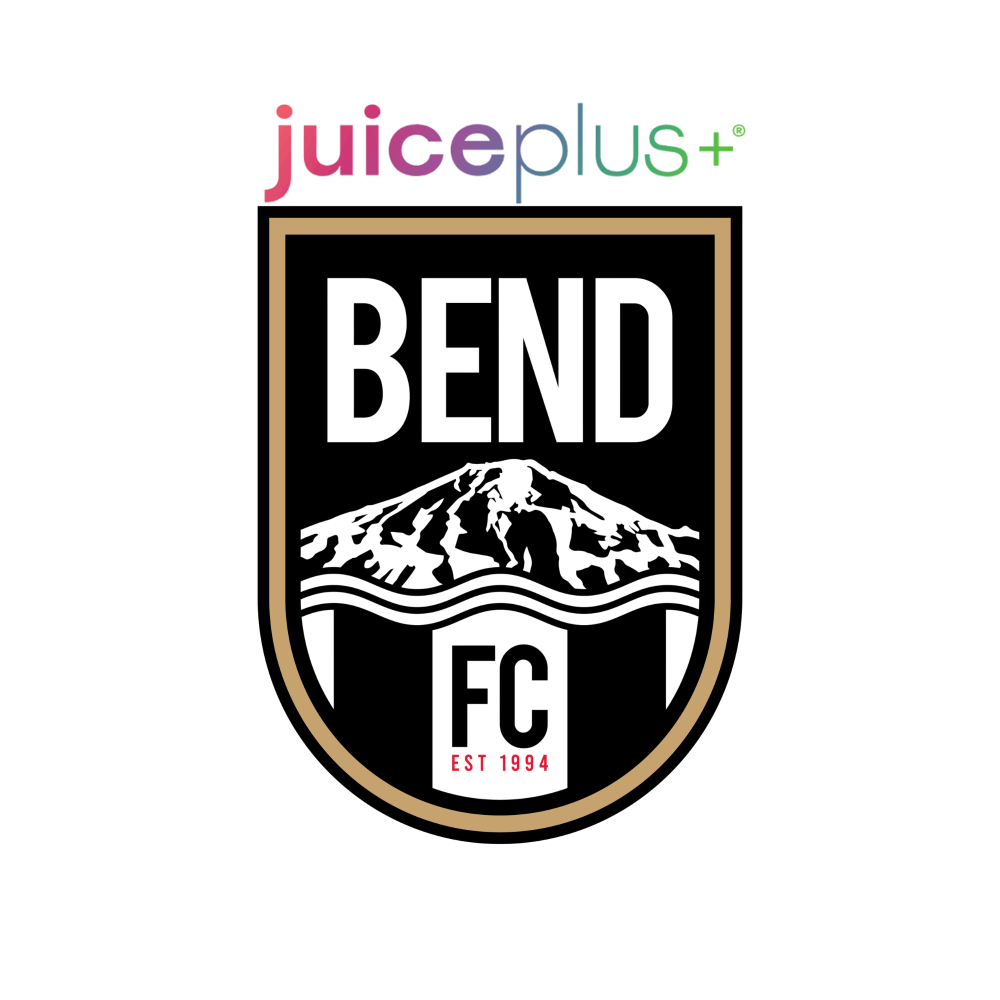
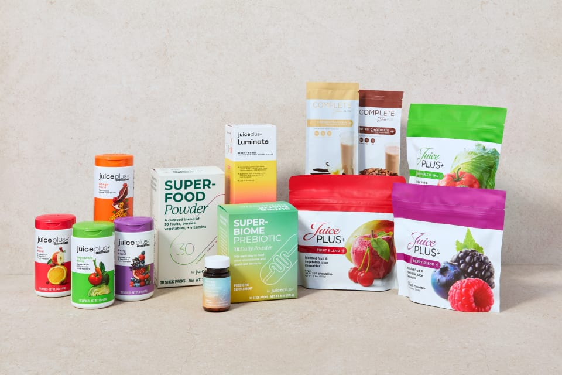

Young people ages 4–25 can receive Juice Plus+ at no product cost through Healthy Starts, and 5% of every qualifying order goes back to Bend FC.
Juice Plus+ for kids and young adults, with a qualifying adult subscription. $12 handling fee per shipment.
of every qualifying order, for as long as the subscription continues. A fundraiser that keeps working.
This is a Bend FC fundraiser powered by The Juice Plus+ Company. It joins two things families already care about: healthy kids and a strong soccer club.
Through Healthy Starts, an adult (18+) who subscribes to a qualifying Juice Plus+ product can add a young person aged 4–25, who receives Juice Plus+ Fruit & Vegetable Blend Capsules or Chewables at no product cost.
Subscriptions renew, so support continues month after month without car washes, bake sales or asking again. The club's share helps fund scholarships, player development, fields and facilities, and club growth.
Enroll in Healthy Starts. Buy your own subscription, add your young person, and support the club through your orders. Pages 4–9 and 16–17.
Become a Partner. A separate, paid role for people who want to share the program and earn. Not required to take part. Pages 18–19.
Daily habits, not game day, decide who finishes strong. Bend FC chose Juice Plus+ because Healthy Starts encourages the everyday habits that build young athletes: better nutrition, hydration, fitness and sleep.
Hard work builds the foundation every athlete stands on.
Rest is when the body recovers, adapts and grows.
Water fuels performance from the first whistle to the last.
Whole-food nutrition fuels healthy bodies, strong minds and better performance.
Together we're investing in healthier kids and a stronger soccer community.
| Healthy Starts explained | 4 | Products & everyday use | 10 |
| What it costs | 6 | Research & athletes | 12 |
| Supporting Bend FC | 8 | How to enroll | 16 |
| Become a Partner | 18 | FAQ, references & help | 20 |
Healthy Starts is a Juice Plus+ program that helps the next generation grow up healthy by giving the gift of whole-food nutrition to young people.
It works through an adult's own subscription: an adult with a qualifying Juice Plus+ subscription can gift Fruit & Vegetable Blends to a young person at no product cost, paying only a handling fee for the young person's shipments.
| Requirement | What it means |
|---|---|
| The adult | Must be 18 or older and hold their own qualifying Juice Plus+ subscription. |
| The young person | Must be aged 4–25. |
| Shipping address | Everything, adult and child, ships to one address. |
| Qualifying subscription | The website lists Capsules, Chewables or Superfood Powder. [NEED FROM JAMES: The flyer says "Essentials Fruit & Vegetable Blends"; checkout also offers "Nutrition+ Powder". Which products qualify?] |
An adult becomes a Juice Plus+ customer with a qualifying subscription for themselves.
Add a loved one aged 4–25. They receive free Fruit & Vegetable Blend Capsules or Chewables. You pay the $12 handling fee every four months.*
Take Juice Plus+ daily, make other healthy changes, and share your progress in optional surveys.
| Age | Order type | Format |
|---|---|---|
| Childhood · 4–12 | Child order | Capsules or chewables |
| Teen years · 13–18 | Adult order | Capsules |
| Young adult · 19–25 | Adult order | Capsules |
| Adult enrolls | Age 18+ |
| Young person | Ages 4–25 |
| Their product | Free* |
| Free product ships | Every 4 months |
| Handling fee | $12 per shipment |
| Everything ships to | One address |
* Free product for a young person requires a qualifying adult Juice Plus+ subscription; a $12 handling fee applies per shipment.
Product: free. Handling fee: $12 every four months, per shipment. The product is free only when a qualifying adult purchases their own Healthy Starts subscription.
Prices as shown on the Juice Plus+ enrollment screen in Bend FC's how-to video:
| Adult product (as shown) | Price shown |
|---|---|
| Fruit & Vegetable Blend Capsules | $54.00 / month |
| Fruit, Vegetable & Berry Blend Capsules | $80.00 |
| Fruit, Vegetable, Berry & Vegan Omega Blend Capsules | $112.50 |
| Nutrition+ Powder and other options | [NEED] |
Checkout in the video ($54 example) shows:
Free product ships every four months, and everything ships to one address. In the video's example, each delivery is 120 servings.
Subscriptions renew automatically; checkout states "This order has a recurring charge for multiple items." Renewal is also what keeps the fundraiser working for Bend FC.
The Juice Plus+ Healthy Starts page shown in the video lists "Change or cancel anytime."
| Item | Required? |
|---|---|
| Adult's own qualifying subscription | Required for the young person's free product |
| $12 handling fee per shipment | Required for the young person's product |
| Optional progress surveys | Optional |
| Becoming a Partner | Optional and separate (page 18) |
The Juice Plus+ Company handles shipping, service and support. Program questions: James Traynor, james.traynor@bendfctimbers.com · 206-979-9792.
Most fundraisers ask again and again. This one works in the background: while your subscription continues, 5% of every qualifying order goes back to Bend FC.
of every qualifying order goes back to Bend FC.
about $4.10 a month to Bend FC from each $82/month subscription in the club's example (5% of each qualifying order).*
Your subscription is a product purchase from The Juice Plus+ Company, placed through the Bend FC store so it is credited to Bend FC.
Each renewal is a new qualifying order.
Bend FC receives 5% of each qualifying order, based on the 2026 Juice Plus+ compensation plan.
You are buying products for your family. Bend FC's share comes from those orders. [NEED FROM JAMES: Confirm nothing should be described as tax-deductible. Leave this sentence as is unless Bend FC's tax adviser approves other wording.]
| Adult subscriptions | Bend FC / month | Bend FC / year |
|---|---|---|
| 25 | $103 | $1,230 |
| 50 | $205 | $2,460 |
| 100 | $410 | $4,920 |
| 250 | $1,025 | $12,300 |
| 500 | $2,050 | $24,600 |
| 1,000 | $4,100 | $49,200 |
| 1,500 | $6,150 | $73,800 |
5% of every qualifying order helps fund:
[NEED FROM JAMES: How will Bend FC decide and report how the money is used? Optional: an annual update to families.]
Bend FC is planning a series of lunch-and-learn classes led by a nutritionist, teaching kids and families better eating habits for growth, training and focus. [NEED FROM JAMES: Dates, location, nutritionist's name and credentials, cost (if any), and whether classes are open to all families.]

Juice Plus+ is whole-food nutrition from fruits, vegetables and berries, picked at peak ripeness and gently dried.
The product the young person receives through Healthy Starts is Fruit & Vegetable Blend Capsules or Chewables. Ages 4–12 can have capsules or chewables; ages 13–25 receive capsules. The adult chooses their own subscription from the options on the next page.
Juice Plus+ is designed to help bridge the gap between what we should eat and what we actually do. It is not a replacement for fruit and vegetables, a balanced diet, or medical care. These statements have not been evaluated by the Food and Drug Administration. This product is not intended to diagnose, treat, cure, or prevent any disease.
| Product | Description (as on the website) |
|---|---|
| Essentials Capsules & Chewables | Fruit, vegetable & berry blends. The website describes 20 fruits, vegetables and plant ingredients. |
| Superfood Powder | 30 fruits, berries & vegetables |
| Super-Biome Probiotic + Prebiotic | 20 billion CFU gut support |
| Luminate | Plant-based focus & clarity |
| Complete Shakes | Plant protein & fiber fuel |
| Role | Products |
|---|---|
| Young person's free product | Fruit & Vegetable Blend Capsules or Chewables (chewables for ages 4–12) |
| Adult qualifying subscription | Capsules, Chewables or Superfood Powder (website). [CONFIRM: see page 4] |
| Other products | [NEED FROM JAMES: Can Super-Biome, Luminate or Complete Shakes be added, and do they count toward the 5%?] |
Healthy Starts encourages taking Juice Plus+ daily alongside better nutrition, hydration, fitness and sleep.
The Juice Plus+ Company describes Juice Plus+ Essentials Capsules as among the most thoroughly researched nutritional products of their kind, studied on the finished product itself in randomized, double-blind, placebo-controlled human trials.
peer-reviewed publications, mostly randomized clinical trials, according to The Juice Plus+ Company.9, 10
universities and medical centers, including Harvard, Yale-Griffin and King's College London, according to The Juice Plus+ Company.9
The website summarizes a randomized, placebo-controlled trial, published in Medicine & Science in Sports & Exercise, that found reduced markers of oxidative stress after exercise in trained men and women.2, 4, 7 Related studies and reviews: page 21.1, 3, 5, 6, 8
Scope: adults (trained men and women). Outcome measured: oxidative-stress markers, not match performance or recovery time. Not studied here: children.
The website mentions these topics without identifying the studies, so they are not presented as findings here.
| Topic on website | Citation given |
|---|---|
| Immune function, upper-respiratory health | "Four peer-reviewed immunity studies" |
| Working memory, attention (young adults) | "Randomized double-blind clinical study" |
| Lean body mass, body composition | "Journal of the American College of Nutrition" |
| Blood flow, oxygen delivery (2–3 months) | "Juice Plus+ clinical research timeline" |
| Cardiovascular, DNA, Omega-3 Index | "Multiple peer-reviewed trials" |
[NEED FROM JAMES: The athlete and performance studies to summarize in print, and full citations for each topic above.]
"After looking at all the clinical research done on Juice Plus+, I recognized that there is nothing else available anywhere in the world, with or without a prescription, that has been shown to do all those things in the human body."
Richard E. DuBois, M.D., Former Chief of Internal Medicine, Atlanta Medical Center. Dr. DuBois speaks on behalf of The Juice Plus+ Company. His views are his own; individual results vary.
Athletes across many sports have publicly described using Juice Plus+, and several have represented the brand. Some were or are paid ambassadors or independent Juice Plus+ Partners. An athlete using a product is a personal testimonial, not scientific evidence.
| Athlete | Documented connection | Still current? |
|---|---|---|
| Winter Vinecki Freestyle aerials · USA | Juice Plus+ Ambassador; has taken its products since childhoodA1 | Unconfirmed |
| Sara Errani Tennis · Italy | Juice Plus+ Italy brand ambassador; renewed for 2025 and 2026A2 | Yes · 2026 |
| Ricky Proehl NFL · 2× Super Bowl champion | Profiled by Juice Plus+ in 2019; independent Juice Plus+ PartnerA3 | Unconfirmed |
| Shannon Miller Gymnastics · USA | Speaker bio lists Juice Plus+ among companies representedA4 | Past |
| Zane Grothe Swimming · USA | Featured brand ambassador; uses products since age 10A5 | Past |
| Solomon Simmons Decathlon · USA | Introduced as athlete partner in 2021A6 | Past |
| Brittany Hochevar Volleyball · USA | Featured in a 2020 USA Volleyball × Juice Plus+ videoA7 | Past |
| Jason Fowler IRONMAN handcycle | Identified as Juice Plus+ Ambassador in interviewsA8 | Unconfirmed |
| Ana Ivanović Tennis · Serbia | Used products since age 15 (interview); not then a paid ambassadorA9 | Past |
Listing an athlete does not mean they endorse Bend FC or this fundraiser, or that Juice Plus+ caused their success. No athlete photographs are shown because image rights have not been secured.
These are agreements with the organization, not endorsements by every athlete connected to it.
| USA Volleyball Apr 2019 – Mar 2021 | Exclusive nutritional supplement partner, two-year agreement.A10 |
| U.S. Performance Center Charlotte, NC · 2024 | Official sponsor; its Fueling Station serves Essentials Capsules and Omega Blend to athletes training there.A11 |
| German Olympic Team Through London 2012 | NSA AG, then the European distributor, was exclusive nutrition partner.A12 |
| St. Jude Memphis Marathon Weekend Since 2001 | The Juice Plus+ Company and Foundation are presenting sponsor of this St. Jude Children's Research Hospital fundraising event. A charitable sponsorship, not a St. Jude endorsement of the products.A13 |
say Healthy Starts made their young person more aware of their health and wellness.
report visiting the doctor less often.
report missing fewer days of school.
These figures are reported by families participating in the Healthy Starts program. They are survey responses, not clinical results. Individual results vary.
These steps follow Bend FC's "How to enroll in Healthy Starts" video, which is also on bendfcjuiceplus.com.
Go to bendfc.juiceplus.com so your order supports Bend FC. Or scan the QR code on the next page to skip to step 4.
Hover over Shop, then click Healthy Starts.
Healthy Starts gives kids and young adults 4–25 Juice Plus+ at no product cost.
First name, last name and birthday. Check the box to accept the Healthy Starts guidelines, Terms of Use and Privacy Policy.
Pick the Juice Plus+ product you'd like for yourself and click Select Product.
Options are matched to your child's age.
Click View Cart. Your child's product shows FREE. Click Checkout.
Confirm it says "You are shopping with Bend Fc", then enter your details and payment.
Opens the Healthy Starts join form on the Juice Plus+ website, credited to Bend FC.
Or type:
us.juiceplus.com/pages/healthy-starts?partner=20292664#joinnow-form
Or visit bendfc.juiceplus.com and choose Shop, then Healthy Starts.
James Traynor, your Bend FC contact
james.traynor@bendfctimbers.com · 206-979-9792
Program details, the numbers, research & FAQ: bendfcjuiceplus.com (information only; all orders are placed at bendfc.juiceplus.com).
A Partner is an independent Juice Plus+ distributor who shares Healthy Starts, helps families, and can earn through the compensation plan. It is optional: you do not need to be a Partner to enroll or to support Bend FC.
| Healthy Starts customer | Partner | |
|---|---|---|
| What you do | Buy a subscription for yourself and add a young person | Share Healthy Starts and help families enroll |
| Cost | Your subscription plus $12 per young-person shipment | $52 a year to join |
| Buying products | Required (your subscription) | Not required to start |
| Earnings | None; your orders support Bend FC | Sales profit plus commission as you advance. No income guarantees |
| What you get | Products for your family | Online store, Back Office, customer and team tools |
Just $52 a year, with no inventory, no shipping, and no customer-service headaches. Juice Plus+ handles all of that for you.
Your own online store, a Back Office, and full customer and team management tools. Juice Plus+ handles all shipping, service and support.
No. You can start right away, though many Partners use Juice Plus+ so they can share more authentically.
There are no income guarantees. Your potential is tied to the time and effort you invest, rewarded through the compensation plan.
Entirely up to you: a lunch break, after the kids are in bed, or a few weekend hours.
Mentorship from experienced Partners plus online training, live calls, events and bootcamps.
No. It's about sharing your passion for health, not traditional sales.
Scan to open the Partner application, or visit bendfc.juiceplus.com and choose "Become a Partner".
An adult 18+ subscribes to a qualifying Juice Plus+ product, then gifts free Fruit & Vegetable Blends to a young person aged 4–25. See page 4.
The young person's product is free only when a qualifying adult purchases their own Healthy Starts subscription. With that adult subscription in place, families pay just a $12 handling fee every four months per shipment for the young person's product. See page 6.
Free product ships every 4 months, and everything (adult and child) ships to one address for convenience.
5% of every qualifying order goes back to Bend FC to fund scholarships, player development, fields and club growth, renewing year after year. See pages 8–9.
The Juice Plus+ Company reports 40+ peer-reviewed publications across 40+ universities and medical centers. See pages 12–13 for what the cited studies measured, and their limits.
No. Being a Partner is a separate, optional role. See page 18.
All resources are available from the Bend FC store at bendfc.juiceplus.com: About Juice Plus+, Healthy Starts, FAQs, Ask the Experts, Clinical Research, Ingredients, Recipes, and the Juice Plus+ YouTube channel (youtube.com/@juiceplus). Full addresses are on page 22.
Titles as labeled on bendfcjuiceplus.com. Exact article titles, authors and volumes still need to be checked against each paper. [NEED: verify]
Shortened addresses (...) are clickable in the digital PDF. Every link is also on bendfcjuiceplus.com in The Science section.
Full addresses for every athlete source, with career facts, are in the Sources table at bendfcjuiceplus.com/athletes.html.
us.juiceplus.com/pages/about-us · /pages/healthy-starts · /pages/faqs · /pages/ask-the-experts · /pages/research · /pages/ingredients · /blogs/recipes (each with ?partner=20292664) · youtube.com/@juiceplus
About this program. A Bend FC fundraiser powered by The Juice Plus+ Company. Orders are placed with The Juice Plus+ Company through the Bend FC store at bendfc.juiceplus.com. bendfcjuiceplus.com is for information only.
* Free product and fees. Free product for a young person requires a qualifying adult Juice Plus+ subscription; a $12 handling fee applies per shipment.
* Club-impact and Partner figures are examples based on the 2026 Juice Plus+ compensation plan and assume subscriptions renew; they are not guarantees, and there are no income guarantees.
Prices. Prices on page 6 are as shown in Bend FC's how-to video and may change. The Juice Plus+ checkout shows current prices, shipping and taxes.
Family-reported results were reported by families participating in the Healthy Starts program. Research summaries describe published studies; individual results vary.
Athletes. Athlete names are used to describe publicly documented relationships with Juice Plus+. Testimonials reflect individual experiences; results vary.
FDA. These statements have not been evaluated by the Food and Drug Administration. This product is not intended to diagnose, treat, cure, or prevent any disease.
[NEED FROM JAMES: Any disclosure wording Juice Plus+ requires on Partner-produced print materials, and permission to use the Juice Plus+ name, logo and product photo in print.]
James Traynor
james.traynor@bendfctimbers.com
206-979-9792
Learn more: bendfcjuiceplus.com · Order: bendfc.juiceplus.com · Club: bendfc.com
Booklet edition: Review draft, November 2026.
Young people ages 4–25 receive Juice Plus+ at no product cost with a qualifying adult subscription ($12 handling fee per shipment), and 5% of every qualifying order goes back to Bend FC, month after month.
Scan to open the join form, or visit bendfc.juiceplus.com and choose Shop, then Healthy Starts.
Want to share the program and earn? Scan to apply. Separate from Healthy Starts.
A Bend FC fundraiser powered by The Juice Plus+ Company. Examples are not guarantees. These statements have not been evaluated by the Food and Drug Administration. This product is not intended to diagnose, treat, cure, or prevent any disease. REVIEW DRAFT